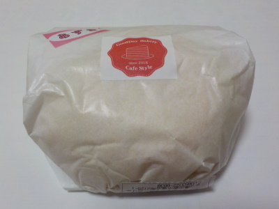
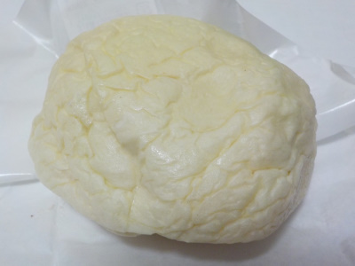
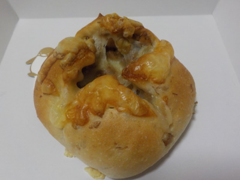
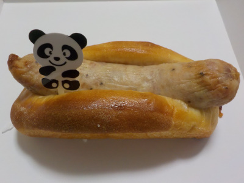
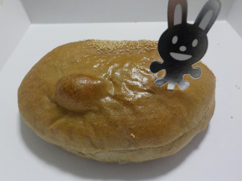
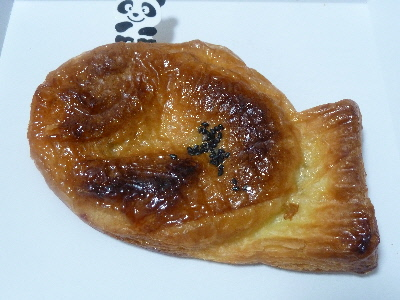

グッディーのふんわり生クリームパン（あずきクリーム）
更新日 : 2019/08/24
白い紙の袋に入っているので、中身は見えません。

中はどんなの？ってドキドキしながら開けました。

中身はシワシワでした。
ふんわり生クリームパンなので、鮮度が大切だったみたい。時間が経ってしぼんだのかな。
家の冷蔵庫で寝かせたのが失敗でした。食べたい時に買って、すぐ食べないといけませんね。
なんとなーくアイスのあずきバーをマイルドにした感じだなーと思いながら食べました。
次は計画的に買って食べようと思いました。
グッディーのくるみとチーズのパン
更新日 : 2019/04/26
商品名通りのパンです。

クルミ多めで味も食感も楽しめました。
チーズとクルミは味を相殺する感じがしましたが、チーズの塩分が多めだったので濃い味で満足感のあるパンになってました。
グッディーのジャンボBOO
更新日 : 2018/10/12
大きなウインナーのパンです。

ウインナーが大きいので、ほぼウインナー味です。
普通にウインナーが美味しいので、満足感がありました。
家でウインナー食べる時って、何本食ようか？ってよく迷います。
グッディーの熊本県産和栗のクリームパン
更新日 : 2018/09/14
一応栗のかっこうなのかな？

ウサギをメインで写真を撮ったので逆さまなのかな。
ちょっと小さ目の栗のクリームパンでした。
ちょっと渋めの栗クリームだったので、コーヒークリムっぽいなって思いました。
グッディーのたい焼きパン
更新日 : 2018/01/17
たい焼きの格好をしたデニッシュあんパンです。

見た目がいいですね。とってもたい焼きっぽいです。
たい焼き欲しいなら「たい焼き」買えばいいじゃん！って意見もあると思いますが、私はたい焼き屋さんが何処にあるか知りません。
味はデニッシュアンパンらしい味でした。美味しかったです。
表面のコゲは砂糖でつけてあるので、甘めでした。